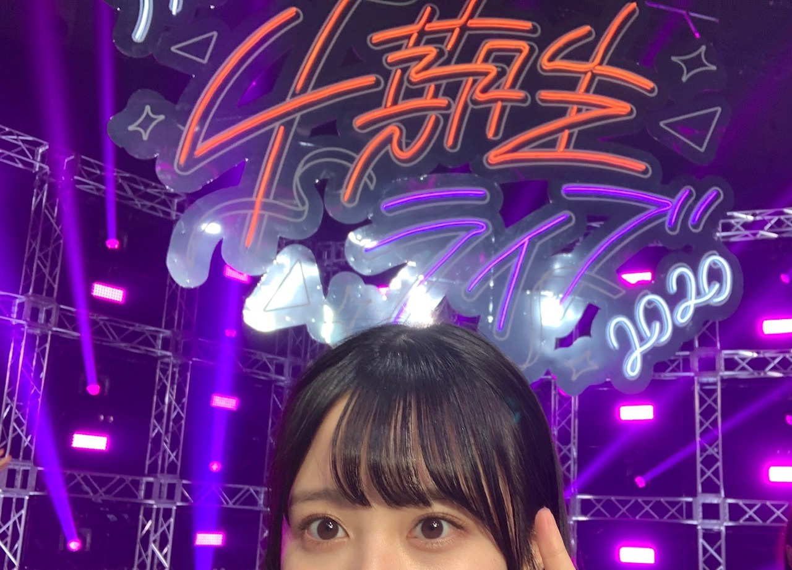
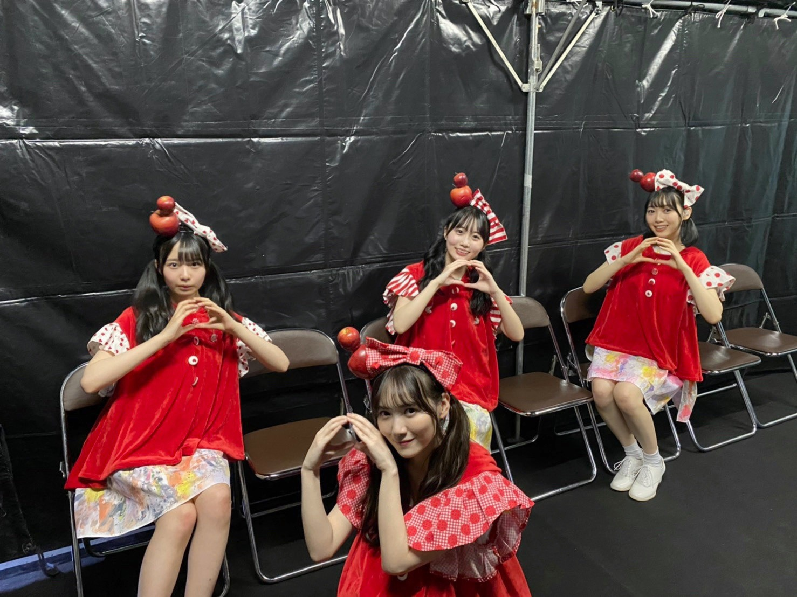
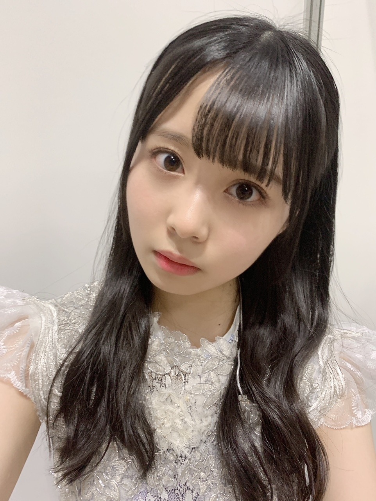
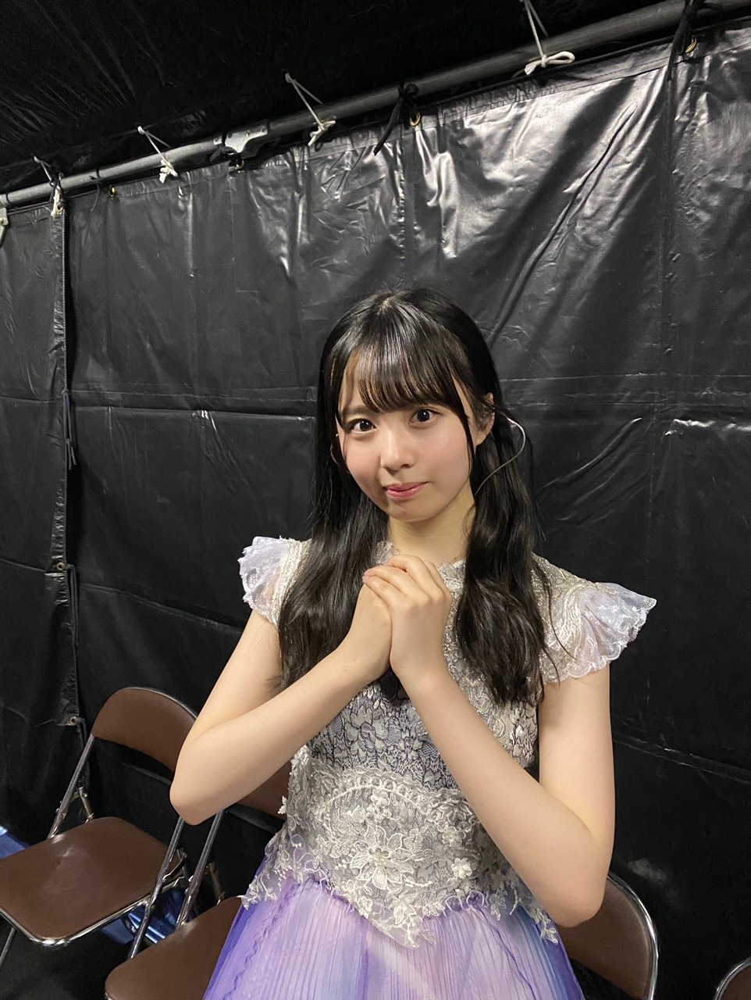

2020/1209Wed私はまだ何もと言うから 。佐藤璃果
こんにちは
乃木坂46 4期生 岩手県出身
佐藤璃果です。


みんなと同じような写真ですが
大事な写真なので！
乃木坂46 4期生ライブ2020
ありがとうございました！︎︎☺︎
私はこのライブに全力で挑んだと
言えることが嬉しいです。
もちろんダンスも歌もまだまだです。
こんなに短期間で色んな曲や
演出を覚えたりするのは初めてと
言っても過言ではありませんでした。
4期のみんなは出来るのに
私たちは出来ないことが多くて、
同じ4期生として
ステージに立たせて頂くのに、
出来ない自分がもどかしくて。
ずっと必死でした。
16人はみんな本当に個性豊かで、
みんながキラキラしていて、眩しくて
その光の中に私は入れているのか、
4期のみんなに何も出来ていなくて申し訳ないなという感情でした。
11人での4期生は
もうすごくキラキラしていて
私たち5人が入ってから
もっとキラキラが増したと
言っていただけるように、
これからまた一つ一つ積み重ねていきたいです！
皆さん、
これからもよろしくお願いしますね！
最後のパジャマでの
16人でのわちゃわちゃ感を見ていたら
ああ、ずっとこの平和な時間が続いてくれればいいのにな
と思いました。
そういうのも含めての
リハでの涙です。
実は本番もステージ袖で泣いてしまうことはあったんですけどね。内緒ですよ内緒
マネージャーさんに助けて頂きました。
感謝です❄️
~~~~~~~~~~~~~~~~~
ユニットコーナーは、
｢白米様｣を
❁まゆたん、矢久保ちゃん、ゆりちゃん❁と
一緒にパフォーマンスさせて頂きました。
私はリハの時、
まゆたんが矢久保ちゃんの事を
本当に可愛いねぇって褒めていて、
それに対して矢久保ちゃんが
テレたり謙遜したり、
ゆりちゃんが、何かをした後に、
ごめんね、ありがとーう。
と言ってくれる
優しい空間が大好きで、ほんの少しの
ユニットコーナーだったのに
このメンツが大好きになりました。
まゆたん、
お洋服とご飯待ってます♡
みんなと歌えて幸せでした！

~~~~~~~~~~~~~~~~

両耳かけゆる巻でした
私はね、白米様から4番目の光の衣装に
着替えている時
リハでも本番でも物凄く感情が動いて、
どうしようって思っていたのですが、
この衣装、なんと西野さんの衣装でした、
加入前から大好きな西野七瀬さんの
衣装でパワー頂きました。
今回こういった状況でのライブで、
皆さんに元気を直接ではなく配信ライブという形でも元気を届けられるという事の
ひとつの証明になればと思います。
16人の大事なメンバー、
沢山支えてくださったマネージャーさん、
ずっと遅くまで頑張ってくださったスタッフさん全ての方に感謝です。
ありがとうございます！！( ¨̮ )
~~~~~~~~~~~~~~~~
4期生楽曲
｢Out of the blue｣
せいらちゃんがセンターです！
せいらちゃんは本当に私達が入りたての頃から気にかけてくれていました。
隣に来て話しかけてくれたり、
色々心配してくれたり、
そんなせいらちゃんが大好きです。
沢山振りの動画を撮らせて貰っちゃって
自分自身の事でもきっと大変だったのに、
快く受け入れてくれてありがとう。
初めて頂いた16人での楽曲、
磨いて磨いてもっといいパフォーマンスをしていけるようにこれからも大事にしていきます。
私はレイちゃんとシンメで
さやか(ちゃん)の隣です！
周りを沢山見て色々な事を吸収出来ればと思います。
｢Out of the blue｣の歌詞も大好きですし、
振り付けも可愛らしくて好きです。
初めての自分の歌割りがあることに感動しました。
皆さんが好きな所も沢山教えて下さい！
素敵な曲を歌わせて頂けることに感謝です。
沢山の方に届きますように。
｢Out of the blue｣
の意味、調べました？私は調べました( ˙º˙ )
❁
4期生ライブ2020
4期生全員が1番輝いていました。
全員がナンバーワンですよね
永遠に記憶に残るライブになりましたか？
私はなりましたよ。
温かいコメントもありがとうございます。
~~~~~~~~~~~~~~~~~~~
明日はるなぴです。
本当本当にお疲れ様！
~~~~~~~~~~~~~~~~~~
皆さんにとって
素敵な1日になりますように。

またね。
#46 りか
コメント(333)
ライブ観たよ
めっちゃ可愛かったしすごくよかったー
ずっとやってほしいなーって思った
これからも頑張ってね！
4期ライブ、もちろん見たよ！！！
テスト直前だったけど見ない訳にはいかなかった( ◜ω◝ )
16人みんなすごい可愛くて、輝いてて、素敵だったよ〜〜
見ていて自然と笑顔になっていたし感動した〜〜
心がじわーっとなるような感じ(伝わるかな？)
パフォーマンスを見たりトークコーナーを聴いたりしてて、新4期の5人の努力も伝わってきたし、だんだん11人と打ち解けていい雰囲気になってる感じもよくわかった！
Out of the blueいい曲だね！
耳に残ってライブ終わったあとも鼻歌で歌ってた笑
初めての16人で4期曲として合ってると思う〜
これからどこかで披露することとかあったら璃果ちゃん探して見ておくね〜〜♡♡
とにかく4期生最高！璃果ちゃん最高！って思ったライブでした。本当に幸せな時間をありがとう。
これからも応援し続けるからね！！！
じゃあまたね！ みみみ٭❀*
最初に四期だけのovertureでめちゃくちゃテンションあがって、いきなり君の名は希望はビックリしたよ とにかく選曲が良すぎて、命とかbicycleとかインフルとか夜明けとか楽しすぎたな～
そして、トキトキメキメキにりかちゃん出てたね！途中でカメラに抜かれててめっちゃ可愛かったよ！ボンボン使ってたね チアみたいでよかったよ！
ありがちな恋愛も見れたの嬉しかったなー しかも四期verだし早く生で見たい！
そして、ユニットコーナーだね あー、白米様サイコーに可愛かった！まゆたんの声もかわいいし、りかちゃんのツインテールありがとうございます あの四人でほかのユニット曲とか聞きたくなったよ
四期曲メドレーもやっぱり良かったなー 16人になってさらに何倍にも輝きが増して見ててなんか感動したよ そして、新曲のout of the blueも良かった！四期生らしく元気な曲で、一回聞いただけなのに頭からはなれないよ 個人的にりかちゃんとレイちゃんの二人で歌うところ好きだよ
アフター配信も見たよ～ 四期生みんなのイチャイチャが見れて楽しかったし、めちゃくちゃしあわせで平和な一時に感じたよ あらロマで上からカメラでとられる演出サイコーだった！
あー、なんかまだ気持ちがふわふわしてるなー また四期ライブができるといいね！そのときも絶対見る～！
とにかく、りかちゃんお疲れさま！ゆっくり休んでね
四期生ライブ璃果ちゃんがとても可愛くて、そして輝いてたよ。僕もとても記憶に残る忘れられないライブになりました。ほんとうにお疲れ様でした。
out of the blueとても可愛いくてだいすきな曲です
特に最後の最後の四期の二人で新四期を挟む振り付けが可愛くて大好きです
璃果ちゃんに質問です。
○体型維持のために何か気をつけることはありますか？
○中学生の妹に何か誕生日プレゼントを買ってあげたいんだけど何かおすすめとかありますか？
以上です。
また5日後が楽しみです。
ありがとう
4期生ライブおつかれさま！！！
たくさん覚えなきゃいけないこととかあったと思うし、自分が出せる力を出し切れたのなら、ひとまずそれでいいんじゃない？
自分一人が全部できるようになるっていうのは誰もができることじゃないと思うから、メンバーのみんなでお互いがお互いをフォローできればいいと思う！
これから一歩ずつ着実に！
(自分が自己肯定感激低マンなので、ブログ読んでてそう思ってしまいました、笑)
ーーーーーーーーーー
ユニットコーナーの白米様、パジャマでの配信、とにかくかわいくて平和な空間でした。
白米様を披露したメンバーからしてかわいさが溢れたものになるだろうと思ってたから、想像通りの空間で非常に良かったです。
パジャマでの配信は誰が考えたんですかね？
ファンからしたら需要の塊でしかないって思ったんだけど(笑)、それでいて歌唱披露もあったから最＆高でした。演出の方に感謝しかないです。
ーーーーーーーーーー
新曲もまたどこかで披露する場面があるのかな？
最初イントロを聴いた瞬間、I see…のような軽快なリズムが来てとても好きな曲だったから、また曲を聴いたり映像を観たりしたい！
Out of the blue、直訳しても意味がわからなったから勿論調べたんだけど、曲自体との兼ね合いもそうだし英語の知識としても知れてよかった！笑
次回のブログも楽しみにしてるね！((o(*ﾟзﾟ*)o))
またね〜！(＊･ω･)ﾉ
お家からたくさん応援させていただきました
もう最初から最後まで最高すぎてあっという間の時間でした。4期生がキラキラしてて、その中に璃果ちゃんがいて、なんて素敵なんだぁ！って感動しました。
どの曲も好きだけどその中でもトキトキメキメキとありがちな恋愛と白米様が特に好き...！
チア璃果ちゃんめっっっちゃ可愛かったしありがちな恋愛は表情もダンスも最高すぎました。
額縁衣装が大好きなのでそれも嬉しかったです
白米様はもうみんなが可愛すぎてとっても癒されました。ツインテール超似合ってます。やばいです。
ラスサビ前の真佑ちゃんの横からひょこっと出るところが特にお気に入りです。またいつかこの4人でユニットやってほしい...！！！！
そして｢Out of the blue｣
2列目おめでとうございます～！！！！
フォーメーションが分かった時もう叫んじゃってやばかったです。笑
1番最初のところ璃果ちゃんが真ん中だし振りも超可愛いしで何もかも好きです。大好きです。
長い文になっちゃってごめんなさい。
とにかくこの幸せな気持ちが璃果ちゃんに伝わってくれたらいいなと思って書いてしまいました。
最高に幸せな時間をありがとうございました...！！
-----------------------------
質問です！↓
・モバメで史緒里ちゃんが4期生ライブの感想を送ってくれたのだけど、璃果ちゃんは何かメッセージもらいましたか？
・ライブの期間中で前よりさらに仲良くなったメンバーはいますか？
・白米様のとき頭から生えてる可愛いりんごは重たかったですか？
・ライブ中の裏話があったら教えてほしいです！
ぜひ聞かせてください〜！！
-----------------------------
七瀬さんの衣装を着たというお話、とっても素敵で感動しました
SR審査の時も推しメンって言ってましたもんね...！
とってもとっても似合ってます。
いつも長いのにもっと長いコメントになっちゃって本当にごめんなさい。文もめちくちゃでごめんなさい
次回のブログも楽しみに待ってます！
大好きです！！
あきひろ
今日も一日おつかれさま〜
4期生ライブおつかれさま！！
なんかすごい燃えてる感じが伝わってくる〜
いつかまた、生のライブパフォーマンス見れるの楽しみにしてる！！
4期生ライブありがとう。
とにかく、よかったよ。
セトリが神。
初期からのファンとしては、運営さん攻めてたね。という感想を持ちました。
大丈夫。璃果ちゃんは光の中に、ちゃんといましたよ。
またコメントしますね。
♭46 ひでき
４期生ライブ最高でした！
りかちゃんが、一生懸命に歌って踊って、楽しそうに見えたのが嬉しかったです！
パジャマトークも、みんな仲良しで見てるだけで、ほっこり出来ました！
最高のメンバーですね！
話変わりますが、乃木恋の彼氏にもなれました！
これからも、よろしくお願いします！笑
次回のブログも、楽しみにしてますね！
4期ライブみてたで！頑張ったなぁ〜
これからも応援してます！
4期生 佐藤璃果の誕生です٩(๑>ᴗ<๑)۶
スゴく楽しい素敵なライブありがとう^^
璃果ちゃん輝いてたよ
4期生みんな輝いてた！
16人揃っての4期生の誕生日って感じかな^^
これから璃果ちゃんの活躍する姿を見れると思うとワクワクが止まらねぇ〜
世の中は油断出来ないご時世だけど健康第一で毎日を楽しんで下さいね^^
それでは、名古屋のおっちゃんでした(^o^)/
乃木坂4期生は16人で完成されたと思うような最高のライブでした！
このライブを観て4期生をこれから全力で応援したいと思いました！
そしてライブお疲れさまでした〜！
この感想を伝えにミーグリ申し込むこととしました。
はい可愛かったしなにより1番璃果ちゃんが輝いていたので。
これからも色んなこと経験して成長していく璃果ちゃんを心から応援してます！！！！
まずはゆっくり余韻に浸りながら休んでね
また5日後！！！
4期生Live凄く楽しかった！
早く生でLive出来るといいね。
4期生ライブお疲れさまでした！最高でした！
白米様可愛かった！璃果ちゃんの可愛さに惚れちゃいそうです！
Out of the blueめっちゃ良かった！すごく好きな曲だよ！パフォーマンスもよかったよ！
リハーサルとかで忙しかったと思うのでゆっくり休んでね。
体調には気をつけてね。
永遠の思い出です。
4期生が大好きすぎる
４期生ライブお疲れ様でした！！
拝見させていただきました。幸せな時間でした。
ユニットの白米様すごく可愛かったです。
ツインテールと白米様の衣装が璃果ちゃんによく似合っていました。観ていて癒されました。
Out of the blue素晴らしかったです。ノリノリな曲調でハマりました。また聴けるのが楽しみです。ダンスもとても可愛かったです。
４期生ライブの思い出が原動力となり、今週も頑張れています。
本当にありがとうございます。
璃果ちゃんのことが、４期生16人のことが大好きです。
お身体に気をつけて頑張ってください。
これからも応援しています！！
4期生ライブ2020お疲れさま！
観たよ！
テレビに繋いで観たから大きい画面で見れて幸せだった〜
ペンライトはもちろん璃果ちゃんのサイリウムカラーにして振ってたよ〜
みんな可愛くてずっと可愛い〜って言ってた笑
白米様めっちゃ可愛かったー！！
みんな可愛いし優しくて見てて自然と笑顔になって幸せなオーラでいっぱいの4期生16人の雰囲気で凄く良かった
このライブを通して16人の絆が深まったんだなって見てて分かったしほんとにパフォーマンスの質がめっちゃ凄くて上から目線になっちゃうんだけど確実に成長してるし皆裏で沢山努力したんだなって思って乃木坂46の未来は明るいな〜って思ったよ
ほんとにお疲れさま！
実際に会場に行って生で見れるのを楽しみにしてるね！
次のブログも楽しみにしてるね〜
4期生の素晴らしさや可愛さが全面に出ていてたしかに全員が輝いてたよ!
あんなに素晴らしいライブは一生忘れることはできません
りかちゃんも4期生としてしっかり輝いてるよ！まだまだこれからも輝きを増してくれることもちゃんと待ってるからね！
Out of the blue曲調がとても好きですダンスも可愛いくて猫パンチと腰振りのとこは大好きです
16人での初めての4期生曲りかちゃんにとっても大切な1曲になると思います色んな人に聞いて貰えるよう僕も布教していきます
またね ！「た」でした。
I see…の後かっきーがシメに入ったとき「えっもう⁉︎」となるくらい、体感あっという間の楽しい時間でした。（アンコールもアフター配信ももちろん良かったです！）
白米様もずっとかわいい…と思いながら見てました。
16人での4期生、最高でした。
これからも応援しています。
4期生ライブおつかれさま！！！
トキトキメキメキとキスの手裏剣を踊るりかちゃんがどうしても
見たいって加入した時からずっと言ってたから見れたことが
ほんとうにうれしくて、白米様も天使すぎて半泣きだったし（）
4番目の光は心にくるものがあって泣いちゃったㅠ_ㅠ
なあちゃんの衣装だったんだね！それを聞いたらさらにエモくて
ジーンとくるものがあります（ ; ; ）はるかもりかちゃん加入前、
ずっとなあちゃんのことがだいすきで卒業してから寂しくて
乃木坂を見る機会が以前より減ってしまっていたけど
りかちゃんを好きになってまた改めて乃木坂を好きになりました。
りかちゃんのおかげでまた乃木坂のこと大好きになったんだ（ ; ; ）
Out Of The Blueめっちゃいい曲だったーーっ ̫ -˘2列目おめでとう( •ᴗ• )♡
りかちゃんが挨拶のときに4期生の中にいてもいいのかなとか
16人の4期生を好きになってもらえるようにとかそんな言葉を
話していたのを聞いて、りかちゃんがいる4期生がだいすきだし
アイドルになってくれてありがとうって強く思いました。
はるかは乃木坂4期生のりかちゃんがだいすきで、16人の4期生がだいすきです。
すごく輝いていたし、たくさん元気をもらいました！
まだまだ書きたいことたくさんあるけど今回はこのくらいで( ；ᵕ； )
ミーグリでも話すねー！
5日後の更新楽しみにしてるね⸜( •ᴗ• )⸝またね！だいすき！
まずは、日曜日の4期生ライブお疲れ様！
ライブ前夜から楽しみすぎて全然寝れませんでした笑
本当に16人みんなが全力で頑張ってて本当にかっこよかったし、感動しました！
4期ライブを見て思ったのは、4期生すごくみんな頼もしいなって思ったよ！
こんな素敵な子達を応援できて僕も心から嬉しいし、感謝してます！
話は変わりますが、乃木恋！なんと、彼氏イベントにて璃果ちゃんの彼氏になることが出来ました！
初めての直筆イベントだったので本当に璃果ちゃんの彼氏になれて良かったです！
届くの楽しみにしてます！
質問コーナーお願いします！
Q4期ライブで1番頑張ったことは何ですか？
Q12月中にやりたいことはありますか？
Q璃果ちゃんのパジャマ姿可愛すぎました！もう一度見たいので、もし写真があったら今度のブログでみたいです！
Q璃果ちゃんを応援してきてよかったよ！
勿論、これからも応援するよ！
よかったらお答えお願いします！
またコメントするね！またねー
PS.裸足でななよだ(きょうすけ)
4期生ライブ観たよ。
16人で初めてのライブ感動しました。
皆輝いていて、とっても楽しかった。
新しい4期生楽曲もとても良くて
新曲発売が楽しみです。
感動をありがとう
ライブ本当に良かったよ！
めっちゃ元気貰いました！
これからもずっと応援してます！！
ライブ見ました(^｡^)
歌やダンスはもちろん、ホントに細かいところまで研究工夫努力してることがよく分かりました！！
永遠に心に残るライブ、ホントにおめでとう^_^！
4期生ライブお疲れ様！そしてほんっっとに最高でした(TT)
りかちゃんが乃木坂46として歌って踊ってる姿、4期生のみんなと支え合ってステージを作る姿、キラキラで可愛くて幸せでした ♡
ユニットの白米様 ほんっとに可愛かったよ〜 ❣️衣装めっちゃ似合ってました ♡新曲も曲調可愛くてすぐ好きになったよ〜！MVは出るのかな？CD発売楽しみにしてます
アフター配信のパジャマも終始可愛かった優勝でした 僕だけの光とあらかじめ語られるロマンス、メンバーとわちゃわちゃしてる姿見てにやにやしました☺️ またこういう機会があったらいいな
最後に！
アフター配信で持ってたぬいぐるみはりかちゃんのですか？良かったらりかちゃんとのツーショット見たいです(^ ̳• ·̫ • ̳^)❤︎
今日も更新ありがとう〜！
りかちゃんのことが大好きなるりより
りっちゃん！
やっほー！
ひろき(Yandji)です☺️
ブログ更新ありがとー！！！
質問タイムー！！！
今年やり残したこととかある？
また、コメントするね！
では、またねー！
ひろき(Yandji)より
「いま」しか出せない、出ないものがたくさん見られました。
璃果さんが感じた自分自身へのもどかしさも含めて、「いま」。
だからこそ尊かったです。
Out of the blue って、そういう意味だったんですね〜
青天の霹靂でした！
四期生ライブ本当にお疲れ様！
璃果が大変ながらにも楽しくライブが終えれた事に幸せを感じてるよ☺︎笑
本当に楽しくもあり、四期の絆が感じられたライブでした☺︎
実は12月9日今日はおれの誕生日なんだ〜笑
りかの4ヶ月後なんだよね〜
同い年の１９歳になったで〜笑
少しお祝いしてもらえるとうれぴいな…
りかも来年成人って考えてみて、結構早いって思わん？笑
俺はほんとーに年々日が過ぎるの早くなってる。（ ; ; ）
だからこそ一瞬一瞬を楽しんでいきたいよね笑
とりあえずライブお疲れ様でした〜☺︎
そういえばミーグリ当たったから、楽しみにしてる笑
できればどんな内容が話したいかブログで教えてもらいたいかも…
じゃまたねー
たいせい
4期生ライブ最高だったよ！！
Overtureをみたら鳥肌が止まらなくてめちゃめちゃ気持ちが高まりました！前日のリハで璃果ちゃんが凄く努力してたんだなって思って改めて璃果ちゃん最高だなぁって思いました。
覚えることがたくさんあって大変だったと思うけど璃果ちゃんのダンスを見て幸せな気持ちになりました！ありがとう！！
「白米様」うん。これはめちゃめちゃ驚いたね。璃果ちゃんにさゆりんご軍団の衣装は鬼に金棒です。いやぁまた見たい！最高！！
アフターのパジャマ姿の璃果ちゃんは尊い気持ちになりました！天使やん！！色々な演出て記憶にたくさん残ったいいライブになりました！！
璃果ちゃんの参加してる楽曲「Out of the blue」が初披露したね！
本当に良い曲でワクワクしました！それに璃果ちゃんの初参加の楽曲！
とても嬉しい気持ちになりました！！
璃果ちゃん本当にお疲れ様！！
質問〇璃果ちゃんライブの余韻はどれくらい残りました？？
璃果ちゃんにとってより良い日々になりますように！！本当にお疲れ様でした！めちゃめちゃ楽しかったよ！！
ゴードンでした！
明日、ミーグリ2次！申し込みしなきゃヽ(^0^)ノ
あっ！BLT予約しました(*^^*ゞ
よくプレゼント応募のアンケートに「見てみたいグラビアは誰ですか？」ってあるんだけど、そこはもちろん「乃木坂46 佐藤璃果」と書いてます♡\(*ˊᗜˋ*)/♡
そのせいかわからんけど、4期生でグラビア率多いから満足ですねー
では、またぁー(´・ω・)つ
そういう所にひかれます！
4期生ライブ、佐藤さんとても輝いてましたよ、もちろん全員輝いてましたが
応援しております
とりあえず、お疲れ様でした！
休日出勤で仕事早く終わったので見ることが出来ました、ホントに感謝。
ホントに可愛かったし、4期生の仲の良さがよく分かりました!
元気沢山貰えて、30歳迎えられる!
同郷なのでもちろんこれからも応援し続けますよ！私はこれから筋トレを頑張ります！
１６人 揃って 絆を 深めた ライブ..
来年は 会場で ファンとも 一体になった
ライブが 開催できると もっと いいよね 。。
そしてはじめまして！
はじめてのブログコメントです！
4期生ライブお疲れ様！
正直4期生ライブを見るまでは璃果ちゃんに対して「かわいいなー」くらいにしか思ってなかったんだけど、ライブでの璃果ちゃんを見てほんとに惹き込まれた！
可愛らしいビジュアルを活かしたハッピーな感じはもちろんなんだけど、かっこいい曲をやるときのスイッチが入ったみたいな表情がほんとに素敵で魅了されました
パフォーマンスもこんなに素敵なんだって感動したし、これからもずっと璃果ちゃんを見たいってほんとに思えた！
パフォーマンスがすごく魅力的で、可愛くて...
まだまだ全然璃果ちゃんのことは知らないけどこれから璃果ちゃんのことを知りたいって心の底から思う
それだけ心が動かされるパフォーマンスだったよ！
璃果ちゃんを見つけれてよかった！
好きになってよかったってこれからたくさん思えるってくらいワクワクしてる！
4期生ライブちゃんと見ることが出来ました、感動をありがとう！
りかちゃんが加入してからどんだけ頑張ってきたのかとか、見えない部分の努力を感じることができたなぁって思います(笑)
ほぼ初めての色んな曲披露とか、MCとかりかちゃんが乃木坂になったんだなぁって改めて感じて、色んな思いとか嬉しさが込み上げてきて、ほんとに泣いちゃうくらい感動しました(笑)
りかちゃんの頑張ってる姿を見て、頑張ろうって改めて思えたよ、ありがとう！！
白米様のりかちゃんはアイドルめちゃくちゃしてて可愛かったし、お決まりのフレーズきちっと決めてるりかちゃんはさすがだなって思ったし、インフルエンサーとか命とかかっこいい曲をキリッと踊ってる姿はかっこいいし、ほんとに最高でした。感想は言いきれないほど、ほんとにりかちゃん輝いてたなぁって思ったよ(笑)推しててよかったなぁって思いました！
あんまし長くなりすぎてもあれなので、ここら辺までということで(笑)
ほんとにほんとにお疲れ様でした、アイドルになってくれて、乃木坂になってくれてほんとにありがとう！！！！
質問
・今回のライブとかを通して、踊ってみて大変だった曲とかありますか？研修生時代も含めてで！
・りかちゃんが今アイドルなんだなぁって感じる瞬間はありますか？
・りかちゃんはアニメとか映画とか何か好きなキャラクターはいますか？
・要望なんですけど、リカロットの時より高めのツインテール見てみたいです！！！
・4期生ライブの裏側エピソードあったら教えてください！
5日後をまた楽しみに待ってるね！
メリアより。
ブログ更新ありがとう︎︎☺︎
先日の4期生ライブ拝見しました！
すごくすごく楽しいライブで、皆の笑顔も沢山見ることができ
元気と勇気を貰って今週の仕事も頑張れています。
そしてステージ上でアイドルをしているりかちゃんを見て
何だかすごく嬉しくて泣きそうになりました。
母と一緒に見ていて、
今泣いたら恥ずかしいぞ…！と思い堪えられましたが、
1人だったら耐えきれなかったと思います。
ダンスもすごく上手で、
可愛い曲もかっこいい曲も似合うりかちゃんに感動しっぱなしで、
あぁりかちゃんを推していてよかったなと何度も何度も思いました。
りかちゃんアイドルになってくれて本当にありがとう！
そして2月のミート＆グリートにも無事当選しました…！
りかちゃんとお話出来るのが今からすごく楽しみです。
緊張しますが、ちゃんと喋れるように頑張りたいと思います。
では、これからどんどん寒くなるので、
体調に気をつけてこれからも頑張ってください…！
応援しています〜！
4期ライブお疲れ様、まじ可愛かったよ！！！
そして、ライブもお疲れ様でした！
同じ岩手県で年も近い人が頑張っているのを見ると励みになります。
これからも応援しています‼️
コメントする

PROFILE
新4期生リレー
202104
| SUN | MON | TUE | WED | THU | FRI | SAT |
|---|---|---|---|---|---|---|
| 1 | 2 | 3 | ||||
| 4 | 5 | 6 | 7 | 8 | 9 | 10 |
| 11 | 12 | 13 | 14 | 15 | 16 | 17 |
| 18 | 19 | 20 | 21 | 22 | 23 | 24 |
| 25 | 26 | 27 | 28 | 29 | 30 | |

4期生ライブお疲れ様でした！
なあちゃんの衣装、すごい！
OUT of the blue
の意味は突然ですかね？
はやくみたいなぁ
本当にお疲れ様でした！
レコメン！ききました！
褒めるという企画で活躍していたので
こっちもきいていて楽しかったです！
3人とも話がうまくておどろきました！
46回目なんですね！
またね。